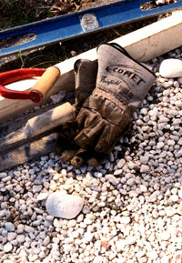
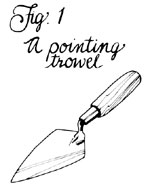
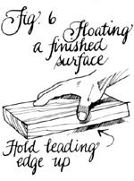
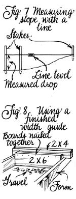
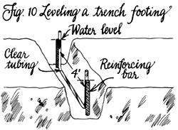
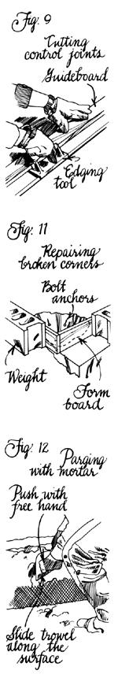
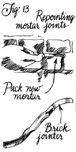
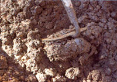
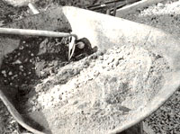

Mudworks
A homeowner's lesson in the coarse art of mixing and using cement, including a trial mix, starting small, the right mud for the right job, mortar.
By the Mother Earth News editors
July/August 1988
Mother's Handbook
The world's strongest foundations, footings and masonry walls are made with concrete or mortar-mud as it's called here in MOTHER's neck of the woods. But many newcomers to country life shy away from working the stuff, perhaps because the chemistry of it seems alien to the more natural lifestyle they're seeking.
It isn't, really. The cement that is the heart of all mudwork comes from good and natural things like limestone, oyster shells and iron ore, which are fused in a kiln, then ground from hard clinkers into a fine powder. Mixed with varying amounts of sand, gravel or crushed stone aggregate, this forms the dry base for concrete, the plastic mix that hardens into bridges and garden walks, or-with the addition of lime-mortar that's used to bond brick, stone and precast concrete blocks.
When water is added to the dry base, it combines chemically with the cement in a process called hydration. The resulting paste solidifies within the hour, binding in the aggregates for now and always. Over a period of three days it cures and hardens to nearly half its finished strength, and in a month or more returns to rock.
A Trial Mix
The best way to learn about any skill is to do it, and working mud is no exception. Buy an 80-pound bag of packaged concrete mix, and with it get a 9" or 10" brick or pointing trowel (Fig. 1), a hoe and a pair of leather work gloves. For what it's worth, a real mortar hoe has a pair of holes in the blade to make mixing easier; my old garden hoe has no holes, but carries a rind of dry cement on the shaft anyway. As for the gloves, masons rarely use them, but wet concrete and mortar are somewhat caustic and can dry the skin and burn the eyes. Cement also makes a great bleaching agent, so don't work mud wearing your best jeans.
Professionals always make a trial mix of any new combination of materials to determine the best proportions for the job at hand; so do I, and so should you. To see what mud should and shouldn't look like, clean out a steel barrow or make up a mortar box (Fig. 2); or use an old 4' X 8' sheet of plywood to serve as an even simpler mortar-mixing board. Mound the dry mix, and scrape out a dent in the center to make a doughnut shape. Add water, and use your hoe to push the inner edge of the doughnut out away from the puddle and then to pull dry mix from the outer perimeter back and into the water. Don't let the round dam of mix break, or all your liquid and much of the cement will flow off from the gravel and sand.
At first, combine the dry mix with about 3/4 the amount of water specified on the package. (An 80-pound bag would normally require about a gallon to flow and set properly.) Try to work with the resulting too-dry mix. The concrete will be gravelly; when you pat the top of the mix with a trowel, the rocks won't slide effortlessly into the sand-cement matrix to give you the smooth presentation you want along forms and on the surface.
Next, work the balance of water into about half of the too-dry mix. It'll become too wet, and watery sand will slop away from the gravel. A trowel pushed into it will "smush" in, and when you slide it sideways, will press gravel down and make a wave in the matrix.
Now that you know what concrete shouldn't look like, mix it properly. You may need a cup or two more water than specified, but add it in small amounts. The result should give you a sense of relief-it just feels and looks and flows right. With a light troweling, gravel will slip into the matrix; it, in turn, will bounce up easily into a firm, smooth surface. Still, the concrete will have a dry look, and when poured in small quantities won't quite flow, but will want to hold together. It will fall in blobs and make a satisfying plop when it lands, like a well-fed toad. Piled in a cone, it will "slump" perhaps a third of its height.
Starting Small
Post setting is an easy one-sack project that can teach several essential mudworking skills, so let's work through planting a sturdy gate post: 8' of pressure-treated 4 X 4 sunk 3' down-deeper if soil is soft, shallower if you have a near-surface hardpan to deal with.
Dig your hole with a posthole digger, or with a squarefaced spade if you have to get out rocks. Use the post to compact the bottom of the hole until it's solid. Unless you have a flowing sand soil on top, firm up the sides, too, by wiggling the post back and forth; soaking the soil can help. The concrete will act as an anchor, but it can loosen in time if the soil surrounding it is loose.
Next, gauge the volume of the hole. If it's small-no more than 8" across-and in firm soil, I use all concrete. Wider than that, say when a shovel was used to dig out stones, I interlayer rocks with the concrete. First, dump 6" of coarse gravel in the hole and compact it, or just lay a flat rock on the bottom. Then prepare enough concrete and loose rock to ring at least a foot of the post's buried length; the concrete mass needn't fill to the top.
Now set in the post, put about 6" of small rock or gravel in the hole, and tamp it down around the pole with a broomstick or metal rod. This rock layer will allow water to drain-a post set in pure concrete would be sitting in a basin, to eventually become waterlogged and rotten.
Square the post with a 2' level (Fig. 3), and pour in your concrete. You may find that, once mixed, the scant 2/3 cubic foot of concrete obtained from an 80-pound sack will make a very small dent in that cavernous hole. In that case, add some rocks if you have them. Just be sure that each rock of any reasonable size is separated from the others and is surrounded by concrete. I make a puddle of mix, add rocks so they aren't quite touching, top up with more concrete, and continue to build in layers like that, packing down the concrete in each layer around the rock and working out any air bubbles with my stick.
Let the concrete set up overnight, then fill the top of the hole with the soil you removed, tamping it hard to plant the post and anchor it securely. You've just accomplished a small-scale poured concrete operation: 1) making the mold, albeit a simple hole in the ground, 2) compacting the base of the footing and pouring the mix and 3) tamping or "rodding" the mix to remove air bubbles. Setting larger posts deeper and anchored more substantially will give you the foundation for a traditional pole barn.
Building a miniature reinforced concrete slab probably sounds a lot more complicated than it actually is. Anywhere you'd like a level, solid surface to step on-say, below a gate or in front of a stoop-would be the perfect place to try this project.
You'll need some lumber scraps and 2 X 4s, along with a saw, a hammer, 10d nails, a tape measure and some 4or 6-mil polyethylene sheeting. Dig out the sod or soil in a rectangle; a space just a little more than 2' wide by 1 ' across will take an 80-pound bag of premix and give you up to a 4"-thick paving stone in that size. Make the hole 6" or so deep-down to firm soil. Use a wooden beam or a brick to compact the bottom and sides well, then fill the trench to within 4" of the top with gravel, and tamp it down, too.
Now, build a rectangular form of two 2' and two 1' 2 X 4s. Nail 8" stakes onto one side at each end, stake tops flush with the tops of the boards. Tap the stakes and form squarely down into the hole, and use your carpenter's level or a straight 3' board with a mason's line level tacked on top to level the form all around (Fig. 4). Made with nominal 2 X 4s set on edge, the top of the form will be 3 1/2" above the level gravel bed-the correct thickness for a small concrete slab.
To give the slab enough tensile strength to withstand the stresses of bending and seasonal changes, you'll need some reinforcement a bit smaller than 1' X 2'. Use a length of old hardware cloth, metal lath or even several thicknesses of chicken wire folded and stomped flat. Lay this inside the form, mix the concrete, and pour it in so it just overflows. With a coat hanger or a pronged garden cultivator, dig down into the bed of wet concrete, snag the wire, and pull it up off the bottom of the form and well into the concrete, but not all the way to the top.
Now, rest a straightedged strike board (the 3' leveling board will do) on the sides of your form, and saw it back and forth over the surface, moving forward slowly and agitating the overflowing top like so much jelly, until a thin layer of cement and sand builds around the larger aggregate to give you a smooth surface (Fig. 5). This is called screeding and is a two-person job on larger projects. Don't overwork it on any one pass or you'll bring up sand and too much water. If you do create a puddle, resist the temptation to sprinkle on dry concretewait instead for the water to be absorbed, then go over the surface again.
Let the concrete heat and set up a bit so you can trowel it smooth. Within 30 minutes to an hour, you should be able to press in a thumb and make only a small dent. Generally, the surface is ready for finishing when the water sheen is gone and the mix has the feel of wet sand beneath your trowel.
Masons use a pair of rectangular steel cement trowels for fine surfaces, and wood or aluminum floats for slightly rougher work, but any block of wood will do for this job. Swipe it back and forth, keeping the leading edge of the block raised a fraction of an inch as you go (Fig. 6). Smooth the surface to even out any bumps, and push the gravel down so you'll get a flat, waterproof finish. Again, don't overwork the area-doing so could cause flaking later on.
After the concrete has set for another hour or two, use a coarse brush or a pocket comb to make shallow grooves over the surface. The little windrows of cement that are gouged out will wear off with use, but the grooves will give you traction for years.
Before the slab is fully set-say, within a day of pouring-take a flat trowel or a table knife and run the tool between wood and concrete so the forms will come off easily. But don't pull the forms for several days lest someone step on the edge of the uncured concrete and break it down. While the slab's still wet, you should also round the edges, where cement meets the form. A ma son's edging tool is best for large jobs, but the flat of a table knife will do for this one. just round and smooth the ragged edge so someone stumbling on it won't scrape a shin.
To cure the concrete properly, cover the new slab with plastic sheeting as soon as the pour is firm enough to stand without being marred. Weight down the edges, and leave it on for a minimum of three days, and longer if possible. When you've removed the plastic and pulled the forms, you'll have accomplished a very simple version of the reinforced slab foundation that's used to support houses.
The Bigger Stuff
Walks, stairs and foundations will require more than a bag or two of premix, so you may want to mix your own concrete for these jobs (see page 96 ). Should you take this route, you'll need a mortar box at the very least, and more likely a 3- to 9-cubic-foot gasoline-powered cement mixer, which you can rent for about $50 a day.
If you use a box, first dampen the inside with water, then spread your measure of gravel evenly over 3/4 of its bottom. Follow with a level portion of sand, and top that with the proper amount of cement, also spread evenly. Slice off a section of the mound with your hoe, and drymix it until the color is uniform. Continue to add dry slices until the entire load is the same color, then push it to one end of the box. Add water in small amounts to the free end while pulling in dry mix as needed; eventually you'll have a uniform mix of the proper consistency.
The procedure for hand mixing in a wheelbarrow is similar in that you must dry-mix thoroughly. The measurements are smaller, and the sand should go in first, followed by gravel, then cement. Machine mixing calls for more caution, and the water and aggregates are blended a bit at a time before the cement is added.
A walkway is little more than a long version of the minislab discussed earlier. If you live in town, it's best to check codes and municipal restrictions before you do any excavating.
Buy about 250' of nylon or hard cotton mason's line and a line level, and estimate the route of your new path. Most walks are 4' wide, so you can plan the distance from shrubbery, gateposts or what have you. Ideally, the slope should be gentle; if the fall is much more than 1" per foot, you may need to add steps. A level line stretched between two stakes will let you measure drop accurately (Fig. 7).
Lay out both sides of your walk with line and stakes. If you place the lines about a foot farther apart than the width of the finished walk, you'll have room for the form boards and support stakes at the sides. Using your spade, dig out the soil within the string perimeter to a depth of about 6", which will put you well into firm subsoil.
Next, place and level your form boards-2 X 4s for straight runs, side-by-side lengths of 1/4 " plywood cut into 3 1/2" strips and nailed together to make fair curves. At the ends and about every 2' between, nail pointed stakes-tops even with the upper edges of the boards (sharper curves may need more frequent supports). On a level walk, plan on pitching the surface to the side, away from buildings, by 1/4" to the foot.
The top of the form should be about 1 1/2" above the ground, and the joints between sections of form board connected with nailed-on scraps of wood. Close the ends with 2 X 4 stop boards nailed between the sides. If any one run is longer than 20', separate it into two by adding an expansion joint-simply a break filled with tar or fiber mastic.
Fill the trench with gravel to the bottom of the form and tamp it down as best you can. At this point, you'll need to make a finished-width guide. It's a piece of lum ber the width of the walk and the depth of the concrete, hanging from a slightly wider board. Mine is a 4' length of 2 X 6 with a 4 1/2' 2 X 4 nailed along its top 2" (Fig. 8). Run the guide along the top of the form to level the bed, then cut and lay down your reinforcing wire, making sure it's narrower than, and not touching, the form. Steel fence wire will do, or-if you have a pair of bolt cutters-you can buy the standard 6 X 6 No. 10 wire mesh. Be prepared to stomp it flat, though.
Starting at one end of the walk, pour in the concrete, and move it along with shovels, packing corners and sides with the flat of a garden rake. This is much more pleasant as a two- or three-person job. Plan to work in 3' or 4' sections, screeding as you go toward the unfinished end. Pour the next section when you've leveled the previous one, allowing the two to blend without setting up.
Finishing can be done with a float or a longer wooden darby, but don't wait too long to start. Brush-score the surface if you wish, then run down the insides of the form with an edging tool, and cut lateral grooves every 4' with it, as well. Use a squared, straight board to guide the edge of the tool (Fig. 9) when you make these control-joint slices. Finally, cut the slab from the form, and cover the job with plastic; when you remove the wood in a week or so, your walk will be complete.
Trench footings are continuous foundations for a wall or building. After marking the perimeter of the footing with lines strung from stakes or horizontal batter boards set beyond the ends of your planned excavation, you can dig down to firm subsoil below the frost line. A lightweight plumb bob hung from the line will allow you to establish both the width and rough depth level of your trench. Footings should be twice as wide as the wall they'll support, and about 8" thick for average construction.
In firm, rock-free soil, you can use the trench itself as the form; if you use wooden forms, widen the excavation to make room for the boards and stakes. The easiest way to level a trench footing is to drive short lengths of reinforcing bar into the soil every 4' along the center line so the tops are even. Use a clear plastic tube filled with water to establish the proper elevation for each bar; the level of water at one end of the tube will always be the same as that at the other, which is matched to the height of the first rod (Fig. 10).
Fill any hollows in the trench bottom with gravel, tamp it down, and pour away. Distribute the mix with rakes or hoes, and screed the surface along the top of the bars with a straight board. If you can get hold of a 4' hand tamper, use it to "jitter" the mix into place. Then trowel the concrete flush with the top of the rods, remove the bars before the mud sets, and fill the holes with loose mix. Wooden forms can be peeled within a couple of days, and plastic sheeting should be used in hot weather.
Simply Mortarfied
Now comes the mortar. It's lovely stuff to work with because it's made with sand-fine aggregate. Buy a small bag of premix and make up a trial batch, just as with the concrete. Too-dry mortar will crack when you throw it on the board, rather than flow out in a svelte line. Too wet, and it will sag into a puddle instead of sitting up proud, and will drizzle over the edges of the trowel. Proper mortar has a bold consistency; plastic and fluid, it will give out a crisp tsssst when you dig the side of your trowel in, then will hold together on the blade. But when you tip the trowel by rotating your wrist and pulling back so as to lay a line, the mortar will roll off deliberately and land with a convincing splat.
You can purchase mortar mix for less than $4 per 80-pound bag, or make your own from one part Portland cement, 1/4 to one part hydrated lime ($3.50 per 50-pound bag) and three to six parts moist sand, depending on how strong-or workable-you want the finished mix to be. Strength increases with more cement and less lime; sand doesn't appreciably affect the strength, but rather the workability. If you use masonry cement, you don't have to add lime because it's already been included. Be aware, though, that there are two common types of mortar cement: Type N, a general-use medium-strength blend with good weather resistance; and Type M, a high-strength cement with even better durability.
Mix your measured ingredients dry in a mortar box, then add water and blend thoroughly until the color is consistent. Add just enough water to make up a goodworking mix. If you must be scientific about it, figure about one pint of water per shovelful of material . . . but that's my guess, and I may not be as scientifically inclined as you. Some folks let the mortar sit for 10 minutes or more, then mix it again, adding a bit more water if necessary. This retempering breaks up initial stiffening and helps in gauging the quality of the batch.
There are many masonry-repair uses for mortar mix around the house. For simple crack patching in walks and walls, use a stiff wire brush to clean the area of flakes and crumbling concrete. Deeper cracks may have to be enlarged or undercut with a cold chisel and hammer (wear safety goggles). Once the opening is brushed clean of debris and powder, dampen the area with water and use a wet pointing trowel to fill the gap with a rich but workable mix. Pack it as deeply into the crack as possible, then build up layers of mortar until you've got enough at the surface to trowel smooth.
Openings around pipes and vents or holes in a block foundation can be sealed using the same method. If you have to, make a cardboard form to back one side of a large hole so the mud doesn't slump out. If you're working in a heated basement, try to keep the patch moist for a day or so by covering it with a sheet of plastic.
Concrete steps and porches may break at the corners, but often the damage isn't severe enough to ruin the whole structure. Nicks and small chunks can be patched without forms if the area is wire-brushed and cleaned well before the mortar is troweled on and sculpted. Where larger hunks have come off, the base should be chiseled clean, then drilled in several places with a 1/4" masonry bit to a depth of 1 " or more. Small wooden forms can be set in place around the damaged area, and the holes filled with bolts or short pieces of rod so they protrude a bit from the ragged surface (Fig. 11). Pack the mortar well into the form, and smooth it flush with the existing surface.
Parging, or one-coat stuccoing, is a real learning experience for a novice. New concrete block walls can be dampened and plastered directly; nonmasonry materials such as wood or insulation board require a metal lath base to adhere to. It's best to use Type M mortar and less sand for parging. Pick up the mud on the bottom of the trowel and help press it into the surface by pushing the blade with your other hand as you slide it along (Fig. 12). Try to achieve a consistent thickness as you worklater, you can use a wet trowel to smooth the surface for a final finish. If you have to work in direct sunlight, dampen the finished wall with a fine spray to keep it from drying too quickly.
The only other small-scale job involving mortar is repointing-replacing the joints between bricks and masonry that have deteriorated over the years because of age, water damage or exposure to chemicals. Chip out the loose bond with a hammer and a narrow chisel; the idea is not to damage the brick surface itself. A square cut made to a 3/4" or 1" depth is ideal. Brush the particles out of the cracks, then use a mister to barely dampen the joint.
To repoint, you don't want a particularly strong mortar, but you do need one that's workable. A mix with a fair amount of lime and sand is best. Use a pointing trowel or a mason's brick jointer to press the new mud firmly into the open joint (Fig. 13). Let the mortar set up a bit, then tool it to shape with the jointer. After about two weeks, you can scrape excess mortar globs of the wall with a broad chisel. One word of warning: Don't try repointing in frigid or even near-freezing weather-the mud will probably get brittle and fall out on the first warm day.
Come Clean
Cement will stick forever to almost anything hard. Hose wet concrete and mortar off every tool that isn't going to be used again within the hour. Wash mortar boxes to bare wood, and hose barrows down to slick metal. Run a few shovelfuls of pure sand in a rinsed-out mixer for at least five minutes to scrape it clean. And any time you don't plan to use steel tools the following day, oil the metal surfaces. Wood, too, succumbs to cement's caustic action, so when you're done working for the season, coat your wood floats and hoe handles with linseed oil. You'll want the tools of the trade in good condition the next time you get the urge to work in that most flexible but permanent medium-mud.
Additional Reading
Concrete, Masonry & Brickwork: A Practical Handbook for the Homeowner and Small Builder, by the U.S. Department of the Army, is available from Dover Publications, Inc., 31 East 2nd St., Mineola, NY 11501. Masonry & Concrete Work, by Max Alth (Harper & Row, 1978) is currently out of print, but may be in your local library.
Self-reliance practitioner/author andMOTHER contributor John Vivian is mixing mud these days to shore up an old farmstead in Massachusetts.
THE RIGHT MUD FOR THE RIGHT JOB
Not all mud is created equal, and for good reason-each type is made for a specific purpose. First, to get the terms and ingredients straight: cement is the bonding agent common to all mudworks. One cubic-foot (94 pounds) sack needs about 5 or 6 gallons of water to undergo hydration and turn to stone. One part cement and half its weight in water mixed with two to three parts sand and three to five parts gravel becomes concrete, the slurry mix that's poured into forms at a building site or molded in a precasting facility; the sand, gravel and stone which make up the lion's share of concrete's volume. are known as aggregates. Portland cement and water mixed with up to an equal part of hydrated lime and three to six parts fine sand make mortar, which is used to create a bonding layer between rock, brick or precast concrete block, or as a stuccoing compound.
Good old-fashioned natural cement, Type N, is still available in some places, and you may find it congenial. It's made from local clayey limestone that varies in quality, but lets you work mud the traditional way. Because of its moderate strength, it's usually mixed with other cements or is used where it won't be supporting heavy loads.
Far more uniform and reliable is an assort ment of rocks containing iron, lime, alumina and silica concocted in a process patented in the nineteenth century by British stonemason Joseph Aspdin, and named for its resemblance to a rock found on the Isle of Portland. Portland cement is sold in 94pound moistureproof bags containing one cubic foot loose volume for about $6 per bag.
The American Society for Testing Materi. als sets standards for cements, and ASTM Type I is the general-purpose Portland you'll get unless you live in an area where the soil is high in sulfates or you have a need for special curing times or temperatures. Type IA Portland cement is the same thing with an air-entraining compound-a kind of soap powder-added. Air entrainment creates thousands of microscopic bubbles within every cubic inch of finished material, adding resilience and resistance to freezing and chemical damage. In the snow belt, most commercial concretes are air-entrained. The only other common cement is ASTM C91, a masonry cement that's mixed with lime and other additives to make mortar with improved workability and water retention. It can be difficult to come by outside the trade, and for most homescale projects, normal Portland is fine for use in mortar.
In addition to pure Portland cement, any hardware or building supply store sells packaged mix; all you have to do is add water, stir and use it. You'll usually find 40-, 60- and 80-pound sacks of a general-purpose concrete mix, a conventional sand/cement/lime mortar mix, and a sand topping mix to use as a concrete patching or stuccoing compound. At about $3.50 per 80-pound bag, these premixes are costly compared to mixing onsite from bags of Portland and truckloads of aggregate, but they're great for small jobs. You can learn a lot about making good mud from a bag or two of premix, so before tackling a major project, I'd recommend setting a post or two in concrete or mortaring up a stone table to get some practice.
Ready-mix, or transit mix, is the wet concrete trucked to your site in a cement mixer. There are all sorts of reasons why, if you need more than a cubic yard or so of material, ready-mix may be the best choice. But it's often just not practical, or even possible, to maneuver 35 tons of machinery through narrow drives and around a tight building site. That's one big reason we still mix mud by hand.
The Trick's in The Mix
Roughly speaking, it would take 41 80-pound sacks of packaged concrete mix to make a cubic yard of finished material. That comes to around $145, or about three times more than the same amount of ready-mix delivered and poured at your site. For major concrete projects-those requiring contractor excavation, inspector approval and much more than a cubic yard of concrete, you are time and money ahead to call in the cement mixer. But if you have a willing work crew with strong backs and some time on their hands, or just want an economical mix for medium-size jobs, you can mix your own from Portland cement and local aggregate. For what it's worth, here are some rules of thumb I've come to follow:
1. Estimate the size of the job. All mudwork is gauged in volume-cubic feet or cubic yards of concrete needed to fill a space. Simple math is all that's required to figure how much you'll need. The small stepping slab mentioned in the main article required not quite 2/3 cubic foot of mix: 1' X 2' X 3 1/2", or 1/3' for our purposes. A larger project such as a footing for a block wall is no different. At an average thickness of 8" and width of 16", the numbers are 2/3' X 1 1/3', multiplied by total length; a 10' run would call for almost 9 cubic feet, or '/3 yard in mud talk, while a perimeter footing for an outbuilding measuring 12' X 10' would need over 38 cubic feet-nearly 11/2 cubic yards.
2. Use the largest size of gravel practicable. Large aggregate is economical, but don't use any stone larger than 1/4 the thickness of the footing or slab being poured, up to about 2" in diameter. If you dig your own aggregate, it must be free of silt and organic matter, which can seriously weaken the concrete.
3. Mix by these cement/sand/gravel ratios, according to use:
This is the volume method, by part (shovelful, box or bucket) or by cubic foot. Measuring by weight is far more accurate, but difficult without a proper scale. The ingredients should be thoroughly mixed dry before adding any water; figure it takes about 1 1/2 cubic yards of loose material to make one yard of finished mud.
4. The water/cement ratio is most important. Clean water is always added in proportion to the cement used in each batch of concrete, not the total mass including aggregates. Each bag of Portland in the mix requires between five and six gallons of water to give the mud a good balance of strength and workability. By weight, at 8.33 pounds per gallon, this comes to a 46:94 ratio-about 50% water-to-cement.
5. Make a trial mix. With site-mixed concrete, trial-testing is important because aggregates vary in water content. Measure the proportions carefully and keep a record so you'll know what makes the best mix.
|
 |
 |
 |
|
 |
 |
 |
|
 |
 |
 |
|
 |
|
|